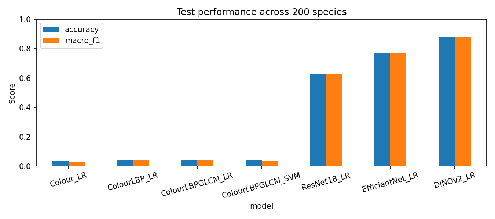

| Group | 12 | Project | #14 Identifying Bird Species from Photographs (CUB-200-2011, 200 species) |
|---|---|---|---|
| Members | Mohamed Alromaithi (100060448) · Zayed Alnuaimi (100061300) | ||
| Notebook link | https://www.kaggle.com/code/mohamedalromaithi/cosc434-group12-project |
|---|---|
| Saved version | Version 3 |
| Save date | 15 November 2026 |
C is chosen on validation macro-F1 only.| Model | Test accuracy | Test macro-F1 |
|---|---|---|
| Colour_LR (baseline) | 3.40 % | 0.0272 |
| ColourLBP_LR | 4.21 % | 0.0402 |
| ColourLBPGLCM_LR | 4.69 % | 0.0450 |
| ColourLBPGLCM_SVM | 4.50 % | 0.0380 |
| ResNet18_LR | 62.88 % | 0.6299 |
| EfficientNet_LR | 77.30 % | 0.7737 |
| DINOv2_LR | 87.99 % | 0.8788 |
Test set, 5,794 images, 200 species. Random guessing scores about 0.5 %.

C range: most Logistic Regression models chose the largest value tried (10).| Member | Work this week | Share |
|---|---|---|
| Mohamed Alromaithi | Notebook restructuring for readability; pretrained-network models (ResNet-18, EfficientNet-B0, DINOv2); this report | 50 % |
| Zayed Alnuaimi | SVM convergence fix; GLCM texture features; confusion-pair error analysis | 50 % |